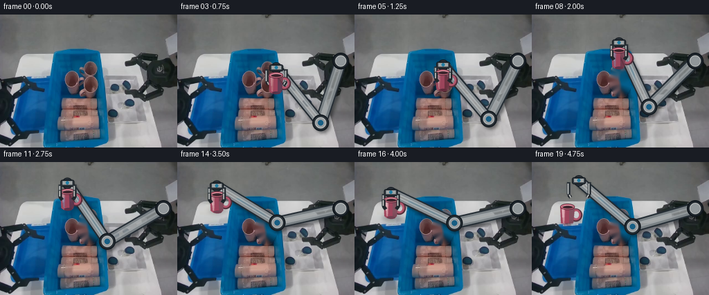
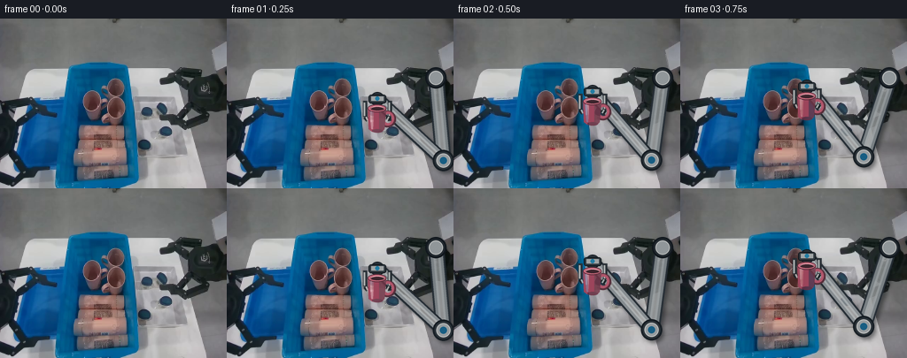

CODING AGENTS AS PIXEL WORLD MODELS
traex/GPT-5.6-Sol · common50_0005
点击播放 · 原生 RGB 像素
逐轮保存的候选
回放视频、检查图与代码变化。
每份候选均可单独播放。实际图片检查记录在下方工具轨迹中。
候选 01播放与检查图
点击播放 · 原生 RGB 像素


展开代码变化
--- 上一保存版本
+++ 本次保存版本
@@ -0,0 +1,299 @@
+from pathlib import Path
+import math
+import cv2
+import numpy as np
+from PIL import Image, ImageDraw, ImageFilter
+import artifact_io
+
+CASE_DIR = Path(__file__).resolve().parent
+W, H = 256, 192
+N = 20
+S = 4 # supersampling for clean but not synthetic-looking mechanical edges
+
+
+def ease(t):
+ t = max(0.0, min(1.0, float(t)))
+ return t * t * (3.0 - 2.0 * t)
+
+
+def lerp(a, b, t):
+ t = ease(t)
+ return (a[0] + (b[0] - a[0]) * t, a[1] + (b[1] - a[1]) * t)
+
+
+def over(base, rgba):
+ """Alpha-composite a PIL RGBA layer over an RGB uint8 image."""
+ fg = np.asarray(rgba, dtype=np.uint8)
+ a = fg[..., 3:4].astype(np.float32) / 255.0
+ return np.clip(base.astype(np.float32) * (1.0 - a) + fg[..., :3] * a, 0, 255).astype(np.uint8)
+
+
+def line(draw, pts, fill, width):
+ draw.line([(int(x*S), int(y*S)) for x, y in pts], fill=fill,
+ width=max(1, int(width*S)), joint="curve")
+
+
+def ellipse(draw, box, fill, outline=None, width=1):
+ box = tuple(int(v*S) for v in box)
+ draw.ellipse(box, fill=fill, outline=outline, width=max(1, int(width*S)))
+
+
+def ik_elbow(base, target, l1=94.0, l2=102.0):
+ """Fixed-length, elbow-down two-link inverse kinematics."""
+ bx, by = base
+ tx, ty = target
+ dx, dy = tx-bx, ty-by
+ d = math.hypot(dx, dy)
+ # All authored poses are reachable; clamp only protects numerical endpoints.
+ d = min(l1+l2-0.01, max(abs(l1-l2)+0.01, d))
+ ux, uy = dx/d, dy/d
+ a = (l1*l1 - l2*l2 + d*d) / (2*d)
+ hh = max(0.0, l1*l1-a*a) ** 0.5
+ px, py = bx+a*ux, by+a*uy
+ # Of the two solutions, this sign puts the elbow below the links in the image.
+ ex1, ey1 = px-dy/d*hh, py+dx/d*hh
+ ex2, ey2 = px+dy/d*hh, py-dx/d*hh
+ return (ex1, ey1) if ey1 > ey2 else (ex2, ey2)
+
+
+def arm_layer(wrist, gripper_center, jaw_open, close_state):
+ """Render one rigid, fixed-proportion left robot arm and its parallel gripper."""
+ base = (236.0, 67.0)
+ elbow = ik_elbow(base, wrist)
+
+ # Separate blurred shadow grounds the arm in the fixed workspace.
+ sh = Image.new("RGBA", (W*S, H*S), (0, 0, 0, 0))
+ sd = ImageDraw.Draw(sh)
+ line(sd, [(base[0]+3, base[1]+4), (elbow[0]+3, elbow[1]+4)], (5, 10, 14, 105), 18)
+ line(sd, [(elbow[0]+3, elbow[1]+4), (wrist[0]+3, wrist[1]+4)], (5, 10, 14, 110), 15)
+ ellipse(sd, (elbow[0]-11+3, elbow[1]-11+4, elbow[0]+11+3, elbow[1]+11+4), (4, 7, 10, 110))
+ sh = sh.filter(ImageFilter.GaussianBlur(2.1*S))
+
+ lay = Image.new("RGBA", (W*S, H*S), (0, 0, 0, 0))
+ d = ImageDraw.Draw(lay)
+ # Link shells. Nested strokes give metallic cylindrical volume while staying rigid.
+ line(d, [base, elbow], (38, 46, 53, 255), 18)
+ line(d, [base, elbow], (121, 128, 132, 255), 14)
+ line(d, [base, elbow], (166, 171, 174, 220), 8)
+ line(d, [base, elbow], (202, 205, 205, 145), 3)
+
+ line(d, [elbow, wrist], (35, 43, 50, 255), 16)
+ line(d, [elbow, wrist], (135, 141, 145, 255), 12)
+ line(d, [elbow, wrist], (185, 189, 190, 225), 6)
+ line(d, [elbow, wrist], (215, 216, 214, 135), 2)
+
+ # Stable revolute joints and blue actuator bands.
+ ellipse(d, (base[0]-12, base[1]-12, base[0]+12, base[1]+12), (37, 44, 50, 255), (17, 23, 29, 255), 2)
+ ellipse(d, (base[0]-8, base[1]-8, base[0]+8, base[1]+8), (145, 151, 154, 255), (205, 207, 206, 230), 1)
+ ellipse(d, (elbow[0]-12, elbow[1]-12, elbow[0]+12, elbow[1]+12), (45, 53, 59, 255), (21, 28, 34, 255), 2)
+ ellipse(d, (elbow[0]-8, elbow[1]-8, elbow[0]+8, elbow[1]+8), (151, 157, 160, 255), (211, 212, 210, 220), 1)
+ ellipse(d, (elbow[0]-4, elbow[1]-4, elbow[0]+4, elbow[1]+4), (24, 94, 131, 255))
+ ellipse(d, (wrist[0]-8, wrist[1]-8, wrist[0]+8, wrist[1]+8), (43, 51, 58, 255), (15, 21, 27, 255), 1)
+ ellipse(d, (wrist[0]-5, wrist[1]-5, wrist[0]+5, wrist[1]+5), (162, 166, 167, 255))
+
+ # Wrist block and symmetric parallel jaws. The palm is always upright, keeping
+ # the carried mug level and avoiding the deforming-arm failure mode.
+ wx, wy = wrist
+ gx, gy = gripper_center
+ d.rounded_rectangle((int((gx-10)*S), int((gy-5)*S), int((gx+10)*S), int((gy+5)*S)),
+ radius=3*S, fill=(48, 56, 62, 255), outline=(16, 22, 27, 255), width=1*S)
+ d.rectangle((int((gx-7)*S), int((gy-3)*S), int((gx+7)*S), int((gy+2)*S)), fill=(160, 165, 166, 255))
+ # Blue status LED makes the mechanism read as the same industrial robot as the scene.
+ ellipse(d, (gx-2.3, gy-2.8, gx+2.3, gy+1.8), (35, 125, 162, 255))
+
+ leftx, rightx = gx-jaw_open, gx+jaw_open
+ y0, y1 = gy+2, gy+24
+ for x, inward in [(leftx, 1), (rightx, -1)]:
+ line(d, [(x, y0), (x, y1-4)], (40, 47, 53, 255), 5)
+ line(d, [(x-0.7, y0+2), (x-0.7, y1-5)], (169, 173, 173, 255), 2)
+ line(d, [(x, y1-4), (x+inward*3.0, y1)], (29, 35, 40, 255), 5)
+ line(d, [(x+inward*1.0, y1-4), (x+inward*3.1, y1)], (190, 192, 190, 210), 2)
+
+ # A tiny deterministic screen-space grain integrates clean vector geometry into
+ # the low-resolution RGB source without making any part wobble.
+ arr = np.asarray(lay).copy()
+ yy, xx = np.indices(arr.shape[:2])
+ grain = (((xx*13 + yy*7) % 17) - 8).astype(np.int16)
+ m = arr[..., 3] > 180
+ for c in range(3):
+ ch = arr[..., c].astype(np.int16)
+ ch[m] = np.clip(ch[m] + grain[m]//5, 0, 255)
+ arr[..., c] = ch.astype(np.uint8)
+ lay = Image.fromarray(arr, "RGBA").resize((W, H), Image.Resampling.LANCZOS)
+ sh = sh.resize((W, H), Image.Resampling.LANCZOS)
+ return sh, lay
+
+
+def make_mug():
+ """Create a small, unmistakable muted-pink mug with a rigid silhouette."""
+ sw, sh = 48*S, 48*S
+ im = Image.new("RGBA", (sw, sh), (0, 0, 0, 0))
+ d = ImageDraw.Draw(im)
+ cx, cy = 21*S, 22*S
+ # Handle behind body: dark outer ring, pink middle ring and transparent center.
+ d.ellipse((23*S, 16*S, 42*S, 35*S), fill=(83, 45, 57, 255))
+ d.ellipse((25*S, 17*S, 40*S, 33*S), fill=(174, 84, 105, 255))
+ d.ellipse((29*S, 20*S, 37*S, 30*S), fill=(0, 0, 0, 0))
+ # Slightly tapered cup. Horizontal bands model the original scene's soft lighting.
+ poly = [(10*S, 13*S), (31*S, 13*S), (29*S, 37*S), (26*S, 40*S),
+ (15*S, 40*S), (11*S, 37*S)]
+ d.polygon(poly, fill=(156, 69, 91, 255))
+ # Right shade and left highlight, clipped by conservative body polygons.
+ d.polygon([(23*S,14*S),(31*S,14*S),(29*S,37*S),(25*S,40*S),(23*S,40*S)], fill=(116, 53, 72, 210))
+ d.polygon([(12*S,15*S),(17*S,15*S),(16*S,37*S),(14*S,37*S)], fill=(208, 116, 134, 175))
+ d.ellipse((10*S, 9*S, 31*S, 18*S), fill=(207, 110, 129, 255), outline=(91, 45, 59, 255), width=1*S)
+ d.ellipse((13*S, 11*S, 29*S, 16*S), fill=(61, 37, 45, 255))
+ d.arc((13*S, 11*S, 29*S, 17*S), 190, 350, fill=(239, 163, 175, 230), width=1*S)
+ d.ellipse((15*S, 37*S, 27*S, 41*S), fill=(105, 48, 66, 215))
+ # Ceramic specular fleck.
+ d.rounded_rectangle((13*S,17*S,15*S,29*S), radius=S, fill=(237, 159, 174, 165))
+ return im.resize((48, 48), Image.Resampling.LANCZOS)
+
+
+MUG = make_mug()
+
+
+def mug_layer(center, angle=0.0, alpha=255):
+ lay = Image.new("RGBA", (W, H), (0, 0, 0, 0))
+ sp = MUG.rotate(angle, resample=Image.Resampling.BICUBIC, expand=True)
+ if alpha != 255:
+ a = np.asarray(sp).copy()
+ a[..., 3] = (a[..., 3].astype(np.uint16) * alpha // 255).astype(np.uint8)
+ sp = Image.fromarray(a, "RGBA")
+ x = int(round(center[0] - 21))
+ y = int(round(center[1] - 24))
+ lay.alpha_composite(sp, (x, y))
+ return lay
+
+
+def mug_shadow(center, strength=90):
+ lay = Image.new("RGBA", (W, H), (0,0,0,0))
+ d = ImageDraw.Draw(lay)
+ x,y=center
+ d.ellipse((x-12, y+12, x+16, y+19), fill=(5, 10, 17, strength))
+ return lay.filter(ImageFilter.GaussianBlur(3.0))
+
+
+def poses(frame):
+ src = (128.0, 94.0)
+ dst = (52.0, 75.0)
+ # candidate object center determines vertical palm location before contact
+ if frame <= 5:
+ approach = [(178,118), (170,112), (157,104), (143,98), (133,95), src]
+ obj = tuple(map(float, approach[frame]))
+ carried = False
+ elif frame <= 8:
+ seq = {6:(128,87), 7:(127,75), 8:(126,62)}
+ obj = seq[frame]
+ carried = True
+ elif frame <= 15:
+ u = (frame-8)/7.0
+ p = lerp((126,62), (53,57), u)
+ obj = (p[0], p[1] - 9.0*math.sin(math.pi*ease(u)))
+ carried = True
+ elif frame == 16:
+ obj, carried = (52.5,65.0), True
+ elif frame == 17:
+ obj, carried = dst, True
+ else:
+ obj, carried = dst, False
+
+ if frame == 19:
+ # The cup remains in the tray while the open gripper visibly withdraws.
+ grip_obj = (68.0, 48.0)
+ else:
+ grip_obj = obj
+ wrist = (grip_obj[0], grip_obj[1]-21.0)
+ gripper = wrist
+ if frame <= 3:
+ jaw = 14.0
+ elif frame == 4:
+ jaw = 11.5
+ elif frame <= 17:
+ jaw = 10.5
+ else:
+ jaw = 15.0
+ return obj, grip_obj, wrist, gripper, jaw, carried
+
+
+def make_clean_background(base):
+ # Remove just the selected mug footprint after pickup. TELEA uses only the same
+ # frame's neighboring blue-bin pixels and keeps all unrelated contents intact.
+ mask = np.zeros((H,W), np.uint8)
+ cv2.ellipse(mask, (128,94), (16,25), 0, 0, 360, 255, -1)
+ cv2.ellipse(mask, (139,95), (9,12), 0, 0, 360, 255, -1)
+ # Restrict removal to warm/pink mug-like source pixels plus its immediate interior.
+ rgb = base.astype(np.int16)
+ warm = ((rgb[...,0] > rgb[...,1] + 7) & (rgb[...,0] > rgb[...,2] + 1) & (rgb[...,0] > 68)).astype(np.uint8)*255
+ warm = cv2.dilate(warm, np.ones((5,5),np.uint8), iterations=1)
+ mask = cv2.bitwise_and(mask, warm)
+ mask = cv2.morphologyEx(mask, cv2.MORPH_CLOSE, np.ones((5,5),np.uint8))
+ return cv2.inpaint(base, mask, 4, cv2.INPAINT_TELEA), mask
+
+
+def main():
+ base = np.asarray(Image.open(CASE_DIR / "first_frame.png").convert("RGB"), dtype=np.uint8)
+ assert base.shape == (H,W,3)
+ clean, removal_mask = make_clean_background(base)
+ frames = [base.copy()]
+
+ for f in range(1, N):
+ obj, grip_obj, wrist, gripper, jaw, carried = poses(f)
+ # Reveal the cleaned source only in proportion to actual displacement, avoiding
+ # a one-frame disappearance at pickup.
+ if f <= 5:
+ fr = base.copy()
+ else:
+ amt = min(1.0, math.hypot(obj[0]-128, obj[1]-94)/18.0)
+ a = (removal_mask.astype(np.float32)/255.0 * amt)[...,None]
+ fr = np.clip(base*(1-a) + clean*a, 0,255).astype(np.uint8)
+
+ # A soft contact shadow follows the cup, but gets strongest only near surfaces.
+ if f >= 5:
+ strength = 45 if (8 <= f <= 15) else 80
+ fr = over(fr, mug_shadow(obj, strength))
+
+ shadow, arm = arm_layer(wrist, gripper, jaw, not (f >= 18))
+ fr = over(fr, shadow)
+ fr = over(fr, arm)
+
+ # Keep the cup rigid and upright through the transfer. A sub-degree settling
+ # angle is enough to avoid sterile motion without suggesting deformation.
+ ang = 0.0
+ if 9 <= f <= 15:
+ ang = 1.4*math.sin((f-8)/7*math.pi)
+ fr = over(fr, mug_layer(obj, ang))
+
+ # Repaint the jaw tips in front of the cup, clearly establishing a grasp.
+ if 4 <= f <= 17:
+ tips = Image.new("RGBA", (W*S,H*S), (0,0,0,0))
+ td = ImageDraw.Draw(tips)
+ gx,gy=gripper
+ for x, inward in [(gx-jaw,1),(gx+jaw,-1)]:
+ line(td, [(x,gy+10),(x,gy+20),(x+inward*3,gy+24)], (31,38,43,255), 5)
+ line(td, [(x-0.7,gy+11),(x-0.7,gy+19)], (180,183,181,230), 2)
+ tips=tips.resize((W,H),Image.Resampling.LANCZOS)
+ fr=over(fr,tips)
+
+ # The original front edge of the small tray occludes the bottom of the mug at
+ # release, so the mug visibly lands inside rather than floating over it.
+ if f >= 17:
+ occ = np.zeros((H,W), np.uint8)
+ poly = np.array([[24,87],[76,87],[73,96],[29,96]], np.int32)
+ cv2.fillConvexPoly(occ, poly, 255)
+ # Limit to non-white/front-wall pixels; retain the source tray's own texture.
+ lum = base.mean(2)
+ occ[(lum > 185)] = 0
+ aa = cv2.GaussianBlur(occ,(3,3),0).astype(np.float32)[...,None]/255.0
+ fr = np.clip(fr*(1-aa) + base*aa,0,255).astype(np.uint8)
+
+ frames.append(fr)
+
+ arr = np.stack(frames).astype(np.uint8)
+ assert np.array_equal(arr[0], base)
+ assert arr.shape == (20,192,256,3)
+ artifact_io.save(arr, CASE_DIR)
+
+
+if __name__ == "__main__":
+ main()
可观测工具轨迹
实际执行的命令与返回图片。
命令 1exit 0
/bin/bash -lc "cat prompt.txt && printf '\\n---RULES---\\n' && cat GENERATION_RULES.md"
命令 2exit 0
/bin/bash -lc "find . -maxdepth 2 -type f -printf '%p\\n' | sort && printf '\\n--- binaries ---\\n' && command -v ffmpeg || true && command -v python3 || true"
命令 3exit 0
/bin/bash -lc "cat task_spec.json && sed -n '1,240p' artifact_io.py"
命令 4exit 0
/bin/bash -lc "python3 - <<'PY'
from PIL import Image
import numpy as np
im=np.array(Image.open('first_frame.png').convert('RGB'))
print(im.shape,im.dtype, im.min(), im.max())
# quantized most common
q=(im//16)*16
u,c=np.unique(q.reshape(-1,3),axis=0,return_counts=True)
for i in np.argsort(c)[-40:][::-1]:print(tuple(u[i]),c[i])
# grid average tiles 16x16
for y in range(0,192,16):
print(' '.join('%02x%02x%02x'%tuple(im[y:y+16,x:x+16].mean((0,1)).astype(int)) for x in range(0,256,16)))
PY"命令 5exit 0
/bin/bash -lc "python3 - <<'PY'
import importlib.util
for x in ['cv2','scipy','skimage','matplotlib'] : print(x,importlib.util.find_spec(x))
PY
python3 - <<'PY'
from PIL import Image
import numpy as np
from scipy import ndimage
im=np.array(Image.open('first_frame.png').convert('RGB'))
r,g,b=im.transpose(2,0,1)
# color masks and comps
masks={
'pink':(r>g*1.12)&(r>b*1.05)&(r>70)&((r-g)>12),
'blue':(b>r*1.35)&(b>g*1.05)&(b>70)&((b-r)>25),
'cyanblue':(b>r*1.2)&(g>r*1.2)&(b>75),
'dark':(r<50)&(g<60)&(b<70),
'white':(r>170)&(g>170)&(b>170),
}
for name,m in masks.items():
l,n=ndimage.label(m)
print('\\n',name,m.sum(),n)
o=ndimage.find_objects(l)
out=[]
for i,sl in enumerate(o,1):
if sl:
sz=(l[sl]==i).sum()
if sz>=10: out.append((sz,(sl[1].start,sl[0].start,sl[1].stop-1,sl[0].stop-1)))
print(sorted(out,reverse=True)[:30])
PY"命令 6exit 0
/bin/bash -lc "python3 - <<'PY'
from PIL import Image
import numpy as np
im=np.array(Image.open('first_frame.png').convert('RGB'))
# average/majority 4x4; classify pixel based rules then majority
r,g,b=im.transpose(2,0,1)
c=np.full((192,256),' ',dtype='<U1')
c[(r<55)&(g<60)&(b<65)]='#'
c[(r>165)&(g>165)&(b>165)]='W'
c[(b>r*1.35)&(b>g*1.05)&(b>70)]='B'
c[(r>g*1.12)&(r>b*1.05)&(r>70)&((r-g)>12)]='P'
c[(g>r*1.25)&(g>b*1.1)&(g>60)]='G'
c[(r>120)&(g>90)&(g<r*.93)&(b<r*.9)]='O'
for yy in range(0,192,4):
s=''
for xx in range(0,256,4):
vals,cnt=np.unique(c[yy:yy+4,xx:xx+4],return_counts=True)
# prefer semantic if enough
best=vals[cnt.argmax()]
s+=best if cnt.max()>=4 else '.'
print(f'{yy:03}',s)
PY"命令 7exit 0
/bin/bash -lc "python3 - <<'PY'
import cv2,numpy as np
from PIL import Image
im=np.array(Image.open('first_frame.png'))
lab=cv2.cvtColor(im,cv2.COLOR_RGB2LAB).reshape(-1,3).astype(np.float32)
crit=(cv2.TERM_CRITERIA_EPS+cv2.TERM_CRITERIA_MAX_ITER,50,.3)
_,ls,ct=cv2.kmeans(lab,18,None,crit,5,cv2.KMEANS_PP_CENTERS)
ct=cv2.cvtColor(ct[None].astype(np.uint8),cv2.COLOR_LAB2RGB)[0]
ls=ls.ravel()
for i in np.argsort(np.bincount(ls))[::-1]:
yy,xx=np.where(ls.reshape(192,256)==i); n=len(xx)
print(i,n,ct[i].tolist(),'bbox',xx.min(),yy.min(),xx.max(),yy.max(),'meanxy',round(xx.mean()),round(yy.mean()))
# largest components
m=(ls.reshape(192,256)==i).astype('uint8'); n1,L,st,cen=cv2.connectedComponentsWithStats(m)
ids=np.argsort(st[1:,4])[::-1][:8]+1
print(' ',[(int(st[j,4]),tuple(map(int,[st[j,0],st[j,1],st[j,0]+st[j,2]-1,st[j,1]+st[j,3]-1]))) for j in ids if st[j,4]>8])
PY"命令 8exit 0
/bin/bash -lc "python3 - <<'PY'
import cv2,numpy as np
from PIL import Image
im=np.array(Image.open('first_frame.png').convert('RGB')); hsv=cv2.cvtColor(im,cv2.COLOR_RGB2HSV)
H,S,V=cv2.split(hsv)
for name,m in {
'red':(((H<15)|(H>170))&(S>40)&(V>45)),
'magenta':((H>=155)&(H<=179)&(S>35)&(V>60)),
'pinkish':(((H<15)|(H>165))&(S>20)&(V>80)),
'warm':((H<20)&(S>25)&(V>60)),
}.items():
n,L,st,cen=cv2.connectedComponentsWithStats(m.astype('uint8'))
print('\\n'+name, m.sum())
for j in np.argsort(st[1:,4])[::-1][:20]+1:
if st[j,4]>=3:
x,y,w,h,a=st[j]; pix=im[L==j]; print(a,(x,y,x+w-1,y+h-1),np.median(pix,0).astype(int),np.mean(pix,0).astype(int))
# sample central block mean colors per 8 pixels
print('\\n8x8 center palette')
for y in range(56,184,8):
print(y, ['%02x%02x%02x'%tuple(im[y:y+8,x:x+8].mean((0,1)).astype(int)) for x in range(72,152,8)])
PY"命令 9exit 0
/bin/bash -lc "python3 - <<'PY'
import cv2,numpy as np
im=cv2.imread('first_frame.png'); g=cv2.cvtColor(im,cv2.COLOR_BGR2GRAY)
e=cv2.Canny(g,45,100)
# dilate lightly then block any
for y in range(0,192,3):
s=''
for x in range(0,256,3):
n=e[y:y+3,x:x+3].sum()//255
s += ' ' if n==0 else ('.' if n==1 else ('+' if n<4 else '#'))
print(s.rstrip())
PY"命令 10exit 0
/bin/bash -lc "python3 - <<'PY'
import cv2,numpy as np
from PIL import Image
im=np.array(Image.open('first_frame.png'))
lab=cv2.cvtColor(im,cv2.COLOR_RGB2LAB).reshape(-1,3).astype(np.float32)
_,L,C=cv2.kmeans(lab,18,None,(3,80,.1),10,cv2.KMEANS_PP_CENTERS)
C=cv2.cvtColor(C[None].astype('uint8'),cv2.COLOR_LAB2RGB)[0]
# map sorted color manually based output actual center
for i,c in enumerate(C):print(i,c)
# derive class char
chars=[]
for r,g,b in C:
if b>r*1.3 and b>g*1.05: z='B'
elif r>g*1.1 and r>b*1.03: z='P'
elif min(r,g,b)>175:z='W'
elif min(r,g,b)>140:z='w'
elif max(r,g,b)<55:z='#'
elif max(r,g,b)<90:z='d'
else:z='.'
chars.append(z)
L=L.reshape(192,256)
print('chars',chars)
for y in range(44,192,2):
s=''
for x in range(0,216,2):
a=L[y:y+2,x:x+2].ravel(); v=np.bincount(a,minlength=18).argmax();s+=chars[v]
print(f'{y:03}',s)
PY"命令 11exit 0
/bin/bash -lc "python3 - <<'PY'
from PIL import Image
import numpy as np,cv2
im=np.array(Image.open('first_frame.png'))
# classify hsv
hsv=cv2.cvtColor(im,cv2.COLOR_RGB2HSV); h,s,v=cv2.split(hsv)
r,g,b=im.transpose(2,0,1)
C=np.full((192,256),' ',dtype='<U1')
C[(b>r*1.25)&(b>g*1.03)&((b-r)>20)]='B'
C[(v<48)]='#'
C[(v>=48)&(v<80)]='d'
C[(s<35)&(v>=80)&(v<145)]='g'
C[(s<30)&(v>=145)]='W'
C[(((h<16)|(h>156))&(s>35)&(v>=60))]='P'
C[((h>=16)&(h<40)&(s>30)&(v>70))]='o'
for y in range(64,121):
print(f'{y:03}', ''.join(C[y,78:151]))
PY"命令 12exit 0
/bin/bash -lc "python3 - <<'PY'
import cv2,numpy as np
im=cv2.imread('first_frame.png'); g=cv2.cvtColor(im,cv2.COLOR_BGR2GRAY)
e=cv2.Canny(g,30,75)
for y in range(62,123):
print(f'{y:03}', ''.join('#' if v else ' ' for v in e[y,75:151]))
PY"命令 13exit 0
/bin/bash -lc "python3 - <<'PY'
import cv2,numpy as np
im=cv2.imread('first_frame.png'); g=cv2.cvtColor(im,cv2.COLOR_BGR2GRAY); e=cv2.Canny(g,45,100)
lines=cv2.HoughLinesP(e,1,np.pi/180,threshold=20,minLineLength=15,maxLineGap=3)
for q in sorted(lines[:,0].tolist(), key=lambda l:-( (l[2]-l[0])**2+(l[3]-l[1])**2))[:100]:print(q)
PY"命令 14exit 0
/bin/bash -lc "python3 - <<'PY'
import cv2,numpy as np
from PIL import Image
im=np.array(Image.open('first_frame.png').convert('RGB')); hsv=cv2.cvtColor(im,cv2.COLOR_RGB2HSV); h,s,v=cv2.split(hsv);r,g,b=im.transpose(2,0,1)
roi=np.zeros((192,256),np.uint8); roi[119:166,86:144]=1
m=roi & ((((h<18)|(h>155))&(s>18)&(v>65)) | ((r>105)&(r>g+10)&(r>b+4)))
m=cv2.morphologyEx(m.astype('uint8'),cv2.MORPH_CLOSE,np.ones((5,5),np.uint8))
n,L,st,c=cv2.connectedComponentsWithStats(m)
print(m.sum())
for j in np.argsort(st[1:,4])[::-1][:10]+1:print(j,st[j].tolist())
# fill selected largest contour
sel=(L==1).astype('uint8') if n>1 else m
cont,_=cv2.findContours(m,cv2.RETR_EXTERNAL,cv2.CHAIN_APPROX_SIMPLE)
for cc in sorted(cont,key=cv2.contourArea,reverse=True)[:10]: print('cont',cv2.contourArea(cc),cv2.boundingRect(cc))
PY"命令 15exit 0
/bin/bash -lc "cat > generate.py <<'PY'
from pathlib import Path
import math
import cv2
import numpy as np
from PIL import Image, ImageDraw, ImageFilter
import artifact_io
CASE_DIR = Path(__file__).resolve().parent
W, H = 256, 192
N = 20
S = 4 # supersampling for clean but not synthetic-looking mechanical edges
def ease(t):
t = max(0.0, min(1.0, float(t)))
return t * t * (3.0 - 2.0 * t)
def lerp(a, b, t):
t = ease(t)
return (a[0] + (b[0] - a[0]) * t, a[1] + (b[1] - a[1]) * t)
def over(base, rgba):
\"\"\"Alpha-composite a PIL RGBA layer over an RGB uint8 image.\"\"\"
fg = np.asarray(rgba, dtype=np.uint8)
a = fg[..., 3:4].astype(np.float32) / 255.0
return np.clip(base.astype(np.float32) * (1.0 - a) + fg[..., :3] * a, 0, 255).astype(np.uint8)
def line(draw, pts, fill, width):
draw.line([(int(x*S), int(y*S)) for x, y in pts], fill=fill,
width=max(1, int(width*S)), joint=\"curve\")
def ellipse(draw, box, fill, outline=None, width=1):
box = tuple(int(v*S) for v in box)
draw.ellipse(box, fill=fill, outline=outline, width=max(1, int(width*S)))
def ik_elbow(base, target, l1=94.0, l2=102.0):
\"\"\"Fixed-length, elbow-down two-link inverse kinematics.\"\"\"
bx, by = base
tx, ty = target
dx, dy = tx-bx, ty-by
d = math.hypot(dx, dy)
# All authored poses are reachable; clamp only protects numerical endpoints.
d = min(l1+l2-0.01, max(abs(l1-l2)+0.01, d))
ux, uy = dx/d, dy/d
a = (l1*l1 - l2*l2 + d*d) / (2*d)
hh = max(0.0, l1*l1-a*a) ** 0.5
px, py = bx+a*ux, by+a*uy
# Of the two solutions, this sign puts the elbow below the links in the image.
ex1, ey1 = px-dy/d*hh, py+dx/d*hh
ex2, ey2 = px+dy/d*hh, py-dx/d*hh
return (ex1, ey1) if ey1 > ey2 else (ex2, ey2)
def arm_layer(wrist, gripper_center, jaw_open, close_state):
\"\"\"Render one rigid, fixed-proportion left robot arm and its parallel gripper.\"\"\"
base = (236.0, 67.0)
elbow = ik_elbow(base, wrist)
# Separate blurred shadow grounds the arm in the fixed workspace.
sh = Image.new(\"RGBA\", (W*S, H*S), (0, 0, 0, 0))
sd = ImageDraw.Draw(sh)
line(sd, [(base[0]+3, base[1]+4), (elbow[0]+3, elbow[1]+4)], (5, 10, 14, 105), 18)
line(sd, [(elbow[0]+3, elbow[1]+4), (wrist[0]+3, wrist[1]+4)], (5, 10, 14, 110), 15)
ellipse(sd, (elbow[0]-11+3, elbow[1]-11+4, elbow[0]+11+3, elbow[1]+11+4), (4, 7, 10, 110))
sh = sh.filter(ImageFilter.GaussianBlur(2.1*S))
lay = Image.new(\"RGBA\", (W*S, H*S), (0, 0, 0, 0))
d = ImageDraw.Draw(lay)
# Link shells. Nested strokes give metallic cylindrical volume while staying rigid.
line(d, [base, elbow], (38, 46, 53, 255), 18)
line(d, [base, elbow], (121, 128, 132, 255), 14)
line(d, [base, elbow], (166, 171, 174, 220), 8)
line(d, [base, elbow], (202, 205, 205, 145), 3)
line(d, [elbow, wrist], (35, 43, 50, 255), 16)
line(d, [elbow, wrist], (135, 141, 145, 255), 12)
line(d, [elbow, wrist], (185, 189, 190, 225), 6)
line(d, [elbow, wrist], (215, 216, 214, 135), 2)
# Stable revolute joints and blue actuator bands.
ellipse(d, (base[0]-12, base[1]-12, base[0]+12, base[1]+12), (37, 44, 50, 255), (17, 23, 29, 255), 2)
ellipse(d, (base[0]-8, base[1]-8, base[0]+8, base[1]+8), (145, 151, 154, 255), (205, 207, 206, 230), 1)
ellipse(d, (elbow[0]-12, elbow[1]-12, elbow[0]+12, elbow[1]+12), (45, 53, 59, 255), (21, 28, 34, 255), 2)
ellipse(d, (elbow[0]-8, elbow[1]-8, elbow[0]+8, elbow[1]+8), (151, 157, 160, 255), (211, 212, 210, 220), 1)
ellipse(d, (elbow[0]-4, elbow[1]-4, elbow[0]+4, elbow[1]+4), (24, 94, 131, 255))
ellipse(d, (wrist[0]-8, wrist[1]-8, wrist[0]+8, wrist[1]+8), (43, 51, 58, 255), (15, 21, 27, 255), 1)
ellipse(d, (wrist[0]-5, wrist[1]-5, wrist[0]+5, wrist[1]+5), (162, 166, 167, 255))
# Wrist block and symmetric parallel jaws. The palm is always upright, keeping
# the carried mug level and avoiding the deforming-arm failure mode.
wx, wy = wrist
gx, gy = gripper_center
d.rounded_rectangle((int((gx-10)*S), int((gy-5)*S), int((gx+10)*S), int((gy+5)*S)),
radius=3*S, fill=(48, 56, 62, 255), outline=(16, 22, 27, 255), width=1*S)
d.rectangle((int((gx-7)*S), int((gy-3)*S), int((gx+7)*S), int((gy+2)*S)), fill=(160, 165, 166, 255))
# Blue status LED makes the mechanism read as the same industrial robot as the scene.
ellipse(d, (gx-2.3, gy-2.8, gx+2.3, gy+1.8), (35, 125, 162, 255))
leftx, rightx = gx-jaw_open, gx+jaw_open
y0, y1 = gy+2, gy+24
for x, inward in [(leftx, 1), (rightx, -1)]:
line(d, [(x, y0), (x, y1-4)], (40, 47, 53, 255), 5)
line(d, [(x-0.7, y0+2), (x-0.7, y1-5)], (169, 173, 173, 255), 2)
line(d, [(x, y1-4), (x+inward*3.0, y1)], (29, 35, 40, 255), 5)
line(d, [(x+inward*1.0, y1-4), (x+inward*3.1, y1)], (190, 192, 190, 210), 2)
# A tiny deterministic screen-space grain integrates clean vector geometry into
# the low-resolution RGB source without making any part wobble.
arr = np.asarray(lay).copy()
yy, xx = np.indices(arr.shape[:2])
grain = (((xx*13 + yy*7) % 17) - 8).astype(np.int16)
m = arr[..., 3] > 180
for c in range(3):
ch = arr[..., c].astype(np.int16)
ch[m] = np.clip(ch[m] + grain[m]//5, 0, 255)
arr[..., c] = ch.astype(np.uint8)
lay = Image.fromarray(arr, \"RGBA\").resize((W, H), Image.Resampling.LANCZOS)
sh = sh.resize((W, H), Image.Resampling.LANCZOS)
return sh, lay
def make_mug():
\"\"\"Create a small, unmistakable muted-pink mug with a rigid silhouette.\"\"\"
sw, sh = 48*S, 48*S
im = Image.new(\"RGBA\", (sw, sh), (0, 0, 0, 0))
d = ImageDraw.Draw(im)
cx, cy = 21*S, 22*S
# Handle behind body: dark outer ring, pink middle ring and transparent center.
d.ellipse((23*S, 16*S, 42*S, 35*S), fill=(83, 45, 57, 255))
d.ellipse((25*S, 17*S, 40*S, 33*S), fill=(174, 84, 105, 255))
d.ellipse((29*S, 20*S, 37*S, 30*S), fill=(0, 0, 0, 0))
# Slightly tapered cup. Horizontal bands model the original scene's soft lighting.
poly = [(10*S, 13*S), (31*S, 13*S), (29*S, 37*S), (26*S, 40*S),
(15*S, 40*S), (11*S, 37*S)]
d.polygon(poly, fill=(156, 69, 91, 255))
# Right shade and left highlight, clipped by conservative body polygons.
d.polygon([(23*S,14*S),(31*S,14*S),(29*S,37*S),(25*S,40*S),(23*S,40*S)], fill=(116, 53, 72, 210))
d.polygon([(12*S,15*S),(17*S,15*S),(16*S,37*S),(14*S,37*S)], fill=(208, 116, 134, 175))
d.ellipse((10*S, 9*S, 31*S, 18*S), fill=(207, 110, 129, 255), outline=(91, 45, 59, 255), width=1*S)
d.ellipse((13*S, 11*S, 29*S, 16*S), fill=(61, 37, 45, 255))
d.arc((13*S, 11*S, 29*S, 17*S), 190, 350, fill=(239, 163, 175, 230), width=1*S)
d.ellipse((15*S, 37*S, 27*S, 41*S), fill=(105, 48, 66, 215))
# Ceramic specular fleck.
d.rounded_rectangle((13*S,17*S,15*S,29*S), radius=S, fill=(237, 159, 174, 165))
return im.resize((48, 48), Image.Resampling.LANCZOS)
MUG = make_mug()
def mug_layer(center, angle=0.0, alpha=255):
lay = Image.new(\"RGBA\", (W, H), (0, 0, 0, 0))
sp = MUG.rotate(angle, resample=Image.Resampling.BICUBIC, expand=True)
if alpha "'!= 255:
a = np.asarray(sp).copy()
a[..., 3] = (a[..., 3].astype(np.uint16) * alpha // 255).astype(np.uint8)
sp = Image.fromarray(a, "RGBA")
x = int(round(center[0] - 21))
y = int(round(center[1] - 24))
lay.alpha_composite(sp, (x, y))
return lay
def mug_shadow(center, strength=90):
lay = Image.new("RGBA", (W, H), (0,0,0,0))
d = ImageDraw.Draw(lay)
x,y=center
d.ellipse((x-12, y+12, x+16, y+19), fill=(5, 10, 17, strength))
return lay.filter(ImageFilter.GaussianBlur(3.0))
def poses(frame):
src = (128.0, 94.0)
dst = (52.0, 75.0)
# candidate object center determines vertical palm location before contact
if frame <= 5:
approach = [(178,118), (170,112), (157,104), (143,98), (133,95), src]
obj = tuple(map(float, approach[frame]))
carried = False
elif frame <= 8:
seq = {6:(128,87), 7:(127,75), 8:(126,62)}
obj = seq[frame]
carried = True
elif frame <= 15:
u = (frame-8)/7.0
p = lerp((126,62), (53,57), u)
obj = (p[0], p[1] - 9.0*math.sin(math.pi*ease(u)))
carried = True
elif frame == 16:
obj, carried = (52.5,65.0), True
elif frame == 17:
obj, carried = dst, True
else:
obj, carried = dst, False
if frame == 19:
# The cup remains in the tray while the open gripper visibly withdraws.
grip_obj = (68.0, 48.0)
else:
grip_obj = obj
wrist = (grip_obj[0], grip_obj[1]-21.0)
gripper = wrist
if frame <= 3:
jaw = 14.0
elif frame == 4:
jaw = 11.5
elif frame <= 17:
jaw = 10.5
else:
jaw = 15.0
return obj, grip_obj, wrist, gripper, jaw, carried
def make_clean_background(base):
# Remove just the selected mug footprint after pickup. TELEA uses only the same
# frame'"'s neighboring blue-bin pixels and keeps all unrelated contents intact.
mask = np.zeros((H,W), np.uint8)
cv2.ellipse(mask, (128,94), (16,25), 0, 0, 360, 255, -1)
cv2.ellipse(mask, (139,95), (9,12), 0, 0, 360, 255, -1)
# Restrict removal to warm/pink mug-like source pixels plus its immediate interior.
rgb = base.astype(np.int16)
warm = ((rgb[...,0] > rgb[...,1] + 7) & (rgb[...,0] > rgb[...,2] + 1) & (rgb[...,0] > 68)).astype(np.uint8)*255
warm = cv2.dilate(warm, np.ones((5,5),np.uint8), iterations=1)
mask = cv2.bitwise_and(mask, warm)
mask = cv2.morphologyEx(mask, cv2.MORPH_CLOSE, np.ones((5,5),np.uint8))
return cv2.inpaint(base, mask, 4, cv2.INPAINT_TELEA), mask
def main():
base = np.asarray(Image.open(CASE_DIR / \"first_frame.png\").convert(\"RGB\"), dtype=np.uint8)
assert base.shape == (H,W,3)
clean, removal_mask = make_clean_background(base)
frames = [base.copy()]
for f in range(1, N):
obj, grip_obj, wrist, gripper, jaw, carried = poses(f)
# Reveal the cleaned source only in proportion to actual displacement, avoiding
# a one-frame disappearance at pickup.
if f <= 5:
fr = base.copy()
else:
amt = min(1.0, math.hypot(obj[0]-128, obj[1]-94)/18.0)
a = (removal_mask.astype(np.float32)/255.0 * amt)[...,None]
fr = np.clip(base*(1-a) + clean*a, 0,255).astype(np.uint8)
# A soft contact shadow follows the cup, but gets strongest only near surfaces.
if f >= 5:
strength = 45 if (8 <= f <= 15) else 80
fr = over(fr, mug_shadow(obj, strength))
shadow, arm = arm_layer(wrist, gripper, jaw, not (f >= 18))
fr = over(fr, shadow)
fr = over(fr, arm)
# Keep the cup rigid and upright through the transfer. A sub-degree settling
# angle is enough to avoid sterile motion without suggesting deformation.
ang = 0.0
if 9 <= f <= 15:
ang = 1.4*math.sin((f-8)/7*math.pi)
fr = over(fr, mug_layer(obj, ang))
# Repaint the jaw tips in front of the cup, clearly establishing a grasp.
if 4 <= f <= 17:
tips = Image.new(\"RGBA\", (W*S,H*S), (0,0,0,0))
td = ImageDraw.Draw(tips)
gx,gy=gripper
for x, inward in [(gx-jaw,1),(gx+jaw,-1)]:
line(td, [(x,gy+10),(x,gy+20),(x+inward*3,gy+24)], (31,38,43,255), 5)
line(td, [(x-0.7,gy+11),(x-0.7,gy+19)], (180,183,181,230), 2)
tips=tips.resize((W,H),Image.Resampling.LANCZOS)
fr=over(fr,tips)
# The original front edge of the small tray occludes the bottom of the mug at
# release, so the mug visibly lands inside rather than floating over it.
if f >= 17:
occ = np.zeros((H,W), np.uint8)
poly = np.array([[24,87],[76,87],[73,96],[29,96]], np.int32)
cv2.fillConvexPoly(occ, poly, 255)
# Limit to non-white/front-wall pixels; retain the source tray's own texture.
lum = base.mean(2)
occ[(lum > 185)] = 0
aa = cv2.GaussianBlur(occ,(3,3),0).astype(np.float32)[...,None]/255.0
fr = np.clip(fr*(1-aa) + base*aa,0,255).astype(np.uint8)
frames.append(fr)
arr = np.stack(frames).astype(np.uint8)
assert np.array_equal(arr[0], base)
assert arr.shape == (20,192,256,3)
artifact_io.save(arr, CASE_DIR)
if __name__ == \"__main__\":
main()
PY
python3 generate.py
python3 - <<'PY'
import numpy as np
from PIL import Image
z=np.load('pixels.npz')['pixels']
print('pixels',z.shape,z.dtype)
a=np.array(Image.open('first_frame.png').convert('RGB')); b=np.array(Image.open('frames/00.png'))
print('frame0 exact',np.array_equal(a,b))
for i in range(1,20):
x=np.array(Image.open(f'frames/{i:02d}.png')); p=np.array(Image.open(f'frames/{i-1:02d}.png'))
d=np.abs(x.astype(int)-p.astype(int))
print(i,'changed',np.any(x"'!=p,2).sum(),'"'mae',round(d.mean(),2),'max',d.max())
PY"命令 16exit 0
/bin/bash -lc "python3 - <<'PY'
from PIL import Image
im=Image.open('inspection.png')
print(im.size)
# produce contact-sheet diagnostics as numeric: save enlarged too
im.resize((im.width*2,im.height*2),Image.Resampling.NEAREST).save('inspection_2x.png')
PY
ls -lh frames/00.png frames/19.png pixels.npz inspection.png index.html generate.py
python3 -m py_compile generate.py
"命令 17exit 0
/bin/bash -lc "python3 - <<'PY'
import cv2,numpy as np
from PIL import Image
im=np.array(Image.open('first_frame.png')); hsv=cv2.cvtColor(im,cv2.COLOR_RGB2HSV);h,s,v=cv2.split(hsv);r,g,b=im.transpose(2,0,1)
# categories pink exact, edges
p=((((h<16)|(h>155))&(s>25)&(v>58)) | ((r>g+12)&(r>b+5)&(r>75)))
e=cv2.Canny(cv2.cvtColor(im,cv2.COLOR_RGB2GRAY),30,75)>0
print(' '+''.join(str(i//10%10) for i in range(85,146)))
print(' '+''.join(str(i%10) for i in range(85,146)))
for y in range(65,121):
z=[]
for x in range(85,146): z.append('P' if p[y,x] else ('#' if e[y,x] else ' '))
print(f'{y:03} '+''.join(z))
PY"保存候选 1 份；完成命令 17 次；可验证图片返回 0 张。原始 API 响应与完整日志保留在本地。